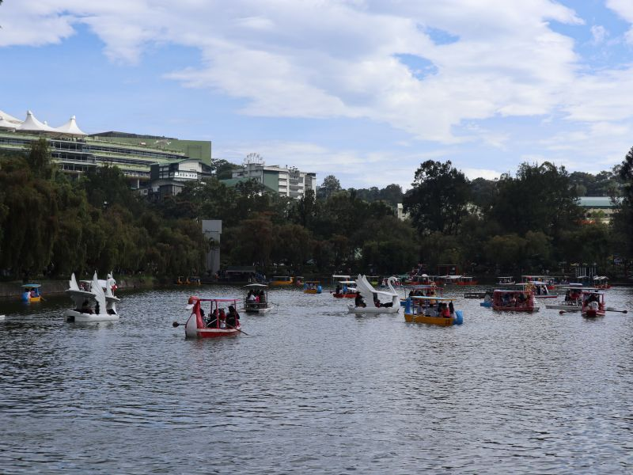
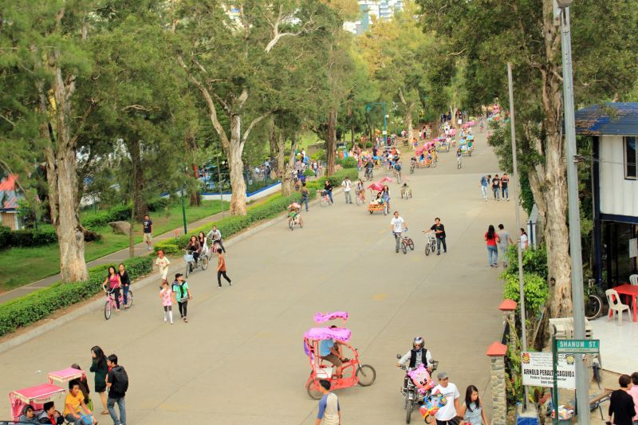

Burnham Park
Burnham Park is a 32.84-hectare historic urban park in the heart of downtown Baguio City, Philippines. Designed by American architect Daniel Burnham in the early 1900s, this vibrant green space features a famous central boating lagoon, gardens, bike rentals, and wide open lawns.

